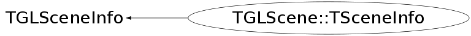

class TGLScene::TSceneInfo: public TGLSceneInfo
SceneInfo ... extended scene context
Function Members (Methods)
public:
protected:
| void | ClearDrawElementPtrVec(TGLScene::DrawElementPtrVec_t& vec, Int_t maxSize) |
| void | ClearDrawElementVec(TGLScene::DrawElementVec_t& vec, Int_t maxSize) |
private:
| Bool_t | CmpDrawElements(const TGLScene::DrawElement_t& de1, const TGLScene::DrawElement_t& de2) |
Data Members
public:
| enum TGLSceneInfo::EClipTest { | kClipNone | |
| kClipOutside | ||
| kClipInside | ||
| }; |
public:
| Int_t | fAsPixelCnt | |
| map<TClass*,UInt_t> | fByShapeCnt | |
| UInt_t | fMinorStamp | |
| Int_t | fOpaqueCnt | |
| TGLScene::DrawElementPtrVec_t | fOpaqueElements | |
| TGLScene::DrawElementPtrVec_t | fSelOpaqueElements | |
| TGLScene::DrawElementPtrVec_t | fSelTranspElements | |
| TGLScene::ShapeVec_t | fShapesOfInterest | |
| Int_t | fTranspCnt | |
| TGLScene::DrawElementPtrVec_t | fTranspElements | |
| TGLScene::DrawElementVec_t | fVisibleElements |
protected:
| Bool_t | TGLSceneInfo::fActive | Show fScene in fViewer |
| UInt_t | TGLSceneInfo::fCameraStamp | Camera's time-stamp on last update. |
| TGLClip* | TGLSceneInfo::fClip | Optional override of clipping-plane |
| Char_t | TGLSceneInfo::fClipMode | Clipping mode, can be disbled. |
| TGLPlaneSet_t | TGLSceneInfo::fClipPlanes | Clipping planes from clip-object; which planes are kept depends on inside/outside mode. |
| UInt_t | TGLSceneInfo::fClipStamp | Clip's time-stamp on last update. |
| TGLPlaneSet_t | TGLSceneInfo::fFrustumPlanes | Clipping planes defined by frustum; only those intersecting the scene volume are kept. |
| Bool_t | TGLSceneInfo::fInClip | Is scene contained within clipping-volume. |
| Bool_t | TGLSceneInfo::fInFrustum | Is scene intersecting view-frustum. |
| Short_t | TGLSceneInfo::fLOD | Optional override of scene lod |
| TGLCamera* | TGLSceneInfo::fLastCamera | Last camera used. |
| TGLClip* | TGLSceneInfo::fLastClip | Last combined viewer/scene clip (set in scene::update) |
| Short_t | TGLSceneInfo::fLastLOD | Last combined viewer/scene lod (set in scene::lodify-scene-info). |
| Float_t | TGLSceneInfo::fLastOLLineW | Last combined viewer/scene outline line-width (set in scene::pre-draw). |
| Short_t | TGLSceneInfo::fLastStyle | Last combined viewer/scene style (set in scene::pre-draw). |
| Float_t | TGLSceneInfo::fLastWFLineW | Last combined viewer/scene wire-frame line-width (set in scene::pre-draw). |
| Float_t | TGLSceneInfo::fOLLineW | Optional override of scene outline line-width |
| TGLSceneBase* | TGLSceneInfo::fScene | |
| UInt_t | TGLSceneInfo::fSceneStamp | Scene's time-stamp on last update. |
| Short_t | TGLSceneInfo::fStyle | Optional override of scene style |
| TGLBoundingBox | TGLSceneInfo::fTransformedBBox | |
| Bool_t | TGLSceneInfo::fUpdateTimeouted | Set if update was interrupted. |
| Bool_t | TGLSceneInfo::fViewCheck | Viewer side check if render is necessary. |
| TGLViewerBase* | TGLSceneInfo::fViewer | |
| Float_t | TGLSceneInfo::fWFLineW | Optional override of scene wire-frame line-width |
Class Charts
{kind=link}
{kind=link}
{kind=link}
{kind=link}

Function documentation
Bool_t CmpDrawElements(const TGLScene::DrawElement_t& de1, const TGLScene::DrawElement_t& de2)
void ClearDrawElementVec(TGLScene::DrawElementVec_t& vec, Int_t maxSize)
void ClearDrawElementPtrVec(TGLScene::DrawElementPtrVec_t& vec, Int_t maxSize)
TSceneInfo(TGLViewerBase* view = 0, TGLScene* scene = 0)
virtual ~TSceneInfo()
void ClearAfterRebuild()
void ClearAfterUpdate()
void PreDraw()
void PostDraw()
void ResetDrawStats()
void UpdateDrawStats(const TGLPhysicalShape& shape, Short_t lod)
void DumpDrawStats()